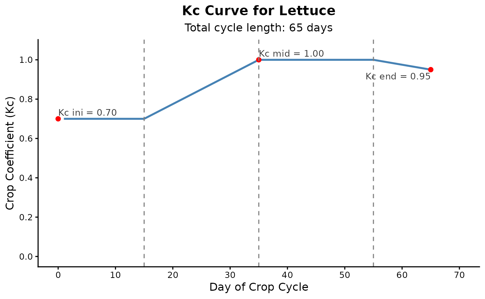

Constructs a time series of daily crop coefficient (\(K_c\)) values and
generates a ggplot2 visualization representing the \(K_c\) curve across the
crop cycle, following FAO-56 guidelines. The curve is divided into four
distinct stages: initial, development, mid-season, and late-season.
Arguments
- kc_points
Numeric vector of length 3 containing the crop coefficients for the initial stage (\(K_{c\text{ ini}}\)), mid-season stage (\(K_{c\text{ mid}}\)), and end of the late-season stage (\(K_{c\text{ end}}\)).
- stage_lengths
Numeric vector of length 4 containing the duration (in days) of each growth stage: initial (\(L_{\text{ini}}\)), development (\(L_{\text{dev}}\)), mid-season (\(L_{\text{mid}}\)), and late-season (\(L_{\text{late}}\)).
- crop
Character string (optional). Name of the crop, used to customize the plot title. Defaults to
NULL.
Value
A named list containing:
kc_serie: A numeric vector of daily \(K_c\) values over the entire cycle.kc_plot: Aggplot2object displaying the constructed curve and stage markers.kc_data: Atibble::tibble()containing the simulation days and corresponding \(K_c\) values.
References
Allen, R. G., Pereira, L. S., Raes, D., & Smith, M. (1998). Crop evapotranspiration - Guidelines for computing crop water requirements. FAO Irrigation and drainage paper 56. Food and Agriculture Organization of the United Nations, Rome.
Examples
kc_params <- c(0.7, 1.0, 0.95)
stage_durations <- c(15, 20, 20, 10)
lettuce_kc <- calc_kc_curve(
kc_points = kc_params,
stage_lengths = stage_durations,
crop = "Lettuce"
)
print(lettuce_kc$kc_data)
#> # A tibble: 65 × 2
#> day kc_value
#> <int> <dbl>
#> 1 1 0.7
#> 2 2 0.7
#> 3 3 0.7
#> 4 4 0.7
#> 5 5 0.7
#> 6 6 0.7
#> 7 7 0.7
#> 8 8 0.7
#> 9 9 0.7
#> 10 10 0.7
#> # ℹ 55 more rows
print(lettuce_kc$kc_plot)
